Start writing unit tests for our play framework app i.e. test the models, views and controllers over the REST api.
Should you need it, this is the solution to the previous lab. We will use this as the starting point for this lab:
Note that we removed the nationality field from User; it was only inserted to demonstrate database evolutions.
If you are using our starting code, download, unzip and import it into eclipse.
Open your application.conf and make sure you are using the h2 database (it is uncommented):
#remote postgres database on heroku
#default.driver=org.postgresql.Driver
#default.url="jdbc:postgresql://ec2-54-235-208-3.compute-1.amazonaws.com:5432/dbjga15tgnfbef?user=euoojolrsszmcl&password=G66hiSiTNonBJvZpI4ty55fRzA&ssl=true&sslfactory=org.postgresql.ssl.NonValidatingFactory"
#default.url=${DATABASE_URL}
#local h2 database
default.driver = org.h2.Driver
default.url = "jdbc:h2:mem:play"
default.username = sa
default.password = ""Within your project folder, open your command prompt/shell and run the app (localhost) just to make sure all is ok before we start updating the code.
activator runNow we are ready to start writing JUnit tests.
There are three different approaches that we will cover for testing our model, User (UserTest1, UserTest2 and UserTest3).
In the test folder of your project, create a new package called models.
Within this package, create a new JUnit test class called UserTest1.
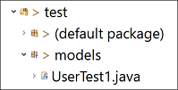
Delete the generated test() method.
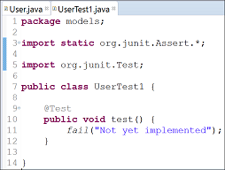
Ensure that your application.conf file is using the in memory h2 database:
#local h2 database
default.driver = org.h2.Driver
default.url = "jdbc:h2:mem:play"
default.username = sa
default.password = "“Add the following test to UserTest1.java:
@Test
public void createAndRetrieveUserByEmail() {
// Create a new user and save it
new User("Joe", "Soap", "joesoap@gmail.com", "secret").save();
// Retrieve the user with e-mail address joesoap@gmail.com
User joesoap = User.findByEmail("joesoap@gmail.com");
// Test
assertNotNull(joesoap);
assertThat("Joe", equalTo(joesoap.firstname));
assertThat("Soap", equalTo(joesoap.lastname));
assertThat("joesoap@gmail.com", equalTo(joesoap.email));
assertThat("secret", equalTo(joesoap.password));
}In your command shell, make sure you are in the project directory. Then run this command:
activator testYou should expect this test to fail.
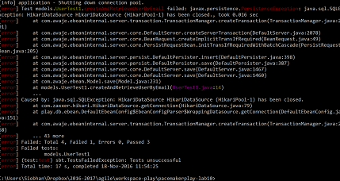
The problem is that we have no application running. We will use play's fakeApplication in our tests.
Setup a fake application in UserTest1 by adding the following code to the existing code:
public static Application fakeApp;
@BeforeClass
public static void startApp(){
fakeApp = Helpers.fakeApplication(Helpers.inMemoryDatabase());
Helpers.start(fakeApp);
}
@AfterClass
public static void stopApp(){
Helpers.stop(fakeApp);
}You will need to import these classes:
import play.Application;
import play.test.Helpers;Try the activator test command again. This time you should have success:
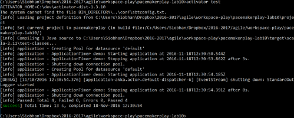
You can, if you want, force your test to fail, just to make sure all is ok with your fakeApplication.
Make a change to any assertion in the above test that will cause a fail e.g.
assertThat("ssgsgsecret", equalTo(joesoap.password));Your test should fail as expected:
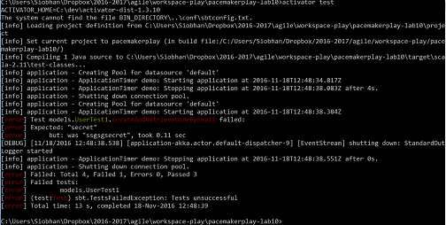
Undo the change you made to your assertion. Ensure your test is passing by running activator test.
Before adding another test to UserTest1, create a Fixtures.java file in your test/models package.
In this file, add the following code:
public class Fixtures {
public static String userJson = "{\n"
+ "\"email\" : \"jim@simpson.com\" ,\n"
+ "\"firstName\": \"Jim\" ,\n"
+ "\"lastName\" : \"Simpson\" ,\n"
+ "\"password\" : \"secret\" \n"
+ "}";
public static User users[] = {
new User ("homer", "simpson", "homer@simpson.com", "secret"),
new User ("lisa", "simpson", "lisa@simpson.com", "secret"),
new User ("maggie", "simpson", "maggie@simpson.com", "secret"),
new User ("bart", "simpson", "bart@simpson.com", "secret"),
new User ("marge", "simpson", "marge@simpson.com", "secret"),
};
}Return to UserTest1 and add the following test to it:
@Test
public void deleteAllUsersResultsInEmptyUserTable() {
//Assert that the user table is empty
assertThat(User.findAll().size(), equalTo(0));
// Add all the users listed in the Fixtures class to the user table
for (User user : Fixtures.users){
new User(user.firstname,
user.lastname,
user.email,
user.password)
.save();
}
//Ensure all were added successfully
assertThat(User.findAll().size(), equalTo(Fixtures.users.length));
//Delete all the users that were just added
User.deleteAll();
//Assert that the user table is once again empty
assertThat(User.findAll().size(), equalTo(0));
}In your command prompt, run your tests:
activator testThe test will fail:
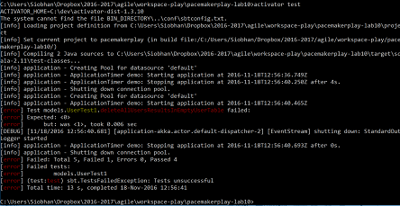
The test failed because the previous test added a User record to our User table. Therefore, the first assertion in the above test fails:
assertThat(User.findAll().size(), equalTo(0));As each test should ideally be independent of the other tests in the class, we need to clean our database before each test. There are two options for doing this.
Our current test class creates a new fakeApplication before the class runs and stops the fakeApplication after the class finishes running:
@BeforeClass
public static void startApp(){
fakeApp = Helpers.fakeApplication(Helpers.inMemoryDatabase());
Helpers.start(fakeApp);
}
@AfterClass
public static void stopApp(){
Helpers.stop(fakeApp);
}Refactor your class so that the fakeApplication is created before each test:
@Before
public void startApp(){
fakeApp = Helpers.fakeApplication(Helpers.inMemoryDatabase());
Helpers.start(fakeApp);
}
@After
public void stopApp(){
Helpers.stop(fakeApp);
}Run your tests. The failing test should now pass.
Option 1 above can result in slow running tests as we are creating and stopping a fakeApplication for each test.
Another option is to create the fakeApplication once in the a test class and use the play generated evolution scripts to drop and recreate the User table before each test.
Remove the existing before and after methods from UserTest1 and replace it with these:
//instance fields
public static String createDdl = "";
public static String dropDdl = "";
@BeforeClass
public static void startApp() throws IOException {
fakeApp = Helpers.fakeApplication(Helpers.inMemoryDatabase());
Helpers.start(fakeApp);
// Reading the evolution file
String evolutionContent = FileUtils.readFileToString(
fakeApp.getWrappedApplication().getFile("conf/evolutions/default/1.sql"));
// Splitting the String to get Create & Drop DDL
String[] splittedEvolutionContent = evolutionContent.split("# --- !Ups");
String[] upsDowns = splittedEvolutionContent[1].split("# --- !Downs");
createDdl = upsDowns[0];
dropDdl = upsDowns[1];
}
@AfterClass
public static void stopApp(){
Helpers.stop(fakeApp);
}
@Before
public void createCleanDb() {
Ebean.execute(Ebean.createCallableSql(dropDdl));
Ebean.execute(Ebean.createCallableSql(createDdl));
}Run your tests again:
activator testThe tests should run successfully because the user table is cleared down before each test:
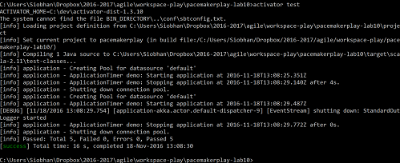
Another way of testing models is to use lambdas functions to set up your fakeApplication.
In your test/models package, create a new JUnit test class UserTest2.
Enter the following code into it:
package models;
import static org.junit.Assert.*;
import org.junit.Test;
import static org.hamcrest.CoreMatchers.*;
import static play.test.Helpers.*;
public class UserTest2 {
@Test
public void createAndRetrieveUserByEmail() {
running(fakeApplication(inMemoryDatabase()), () -> {
// Create a new user and save it
new User("Joe", "Soap", "joesoap@gmail.com", "secret").save();
// Retrieve the user with e-mail address joesoap@gmail.com
User joesoap = User.findByEmail("joesoap@gmail.com");
// Test
assertNotNull(joesoap);
assertThat("Joe", equalTo(joesoap.firstname));
assertThat("Soap", equalTo(joesoap.lastname));
assertThat("joesoap@gmail.com", equalTo(joesoap.email));
assertThat("secret", equalTo(joesoap.password));
});
}
}Via your command prompt, run the tests:
activator testAll should run successfully:
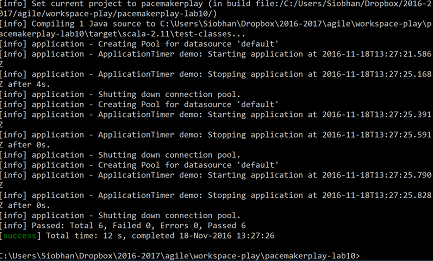
Another way of testing models is to extend WithApplication.
In your test/models package, create a new JUnit test class UserTest3.
Enter the following code into it:
package models;
import static org.junit.Assert.*;
import org.junit.Test;
import play.test.WithApplication;
import static org.hamcrest.CoreMatchers.*;
import static play.test.Helpers.*;
public class UserTest3 extends WithApplication{
//automatically ensures that a fake application is started
//and stopped for each test method.
@Test
public void createAndRetrieveUserByEmail() {
// Create a new user and save it
new User("Joe", "Soap", "joesoap@gmail.com", "secret").save();
//Retrieve the user with e-mail address joesoap@gmail.com
User joesoap = User.findByEmail("joesoap@gmail.com");
// Test
assertNotNull(joesoap);
assertThat("Joe", equalTo(joesoap.firstname));
assertThat("Soap", equalTo(joesoap.lastname));
assertThat("joesoap@gmail.com", equalTo(joesoap.email));
assertThat("secret", equalTo(joesoap.password));
}
}Via your command prompt, run the tests:
activator testAll should run successfully:
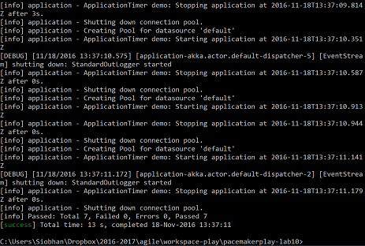
Currently the code in your HomeController.java class is this:
package controllers;
import play.mvc.*;
import views.html.*;
/**
* This controller contains an action to handle HTTP requests
* to the application's home page.
*/
public class HomeController extends Controller {
/**
* An action that renders an HTML page with a welcome message.
* The configuration in the <code>routes</code> file means that
* this method will be called when the application receives a
* <code>GET</code> request with a path of <code>/</code>.
*/
public Result index() {
return ok(index.render("Welcome to Pacemaker Web 1.0"));
}
}In the test folder of your project, create a new package called controllers.
Within this package, create a new JUnit test class called HomeControllerTest.
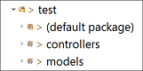
Delete the generated test() method.
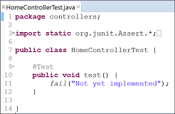
Enter the following code into the HomeControllerTest class:
package controllers;
import static org.junit.Assert.*;
import static play.mvc.Http.Status.OK;
import static play.test.Helpers.contentAsString;
import org.junit.Test;
import play.mvc.Result;
public class HomeControllerTest {
@Test
//Testing the index method to ensure the home page of the
//application is rendered correctly
public void testIndex() {
Result result = new HomeController().index();
assertEquals(OK, result.status());
assertEquals("text/html", result.contentType().get());
assertEquals("utf-8", result.charset().get());
assertTrue(contentAsString(result).contains("Welcome to Pacemaker Web"));
}
}Via your command prompt, run the tests:
activator testAll should run successfully:
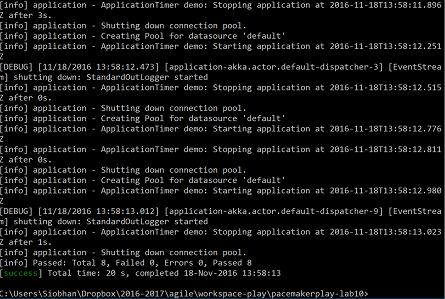
Open your PacemakerAPI.java class. Review the code so that it is fresh in your mind.
Open the conf/routes file. Review the contents also. We will be testing our PacemakerAPI via these routes.
Open the test/models/Fixtures file. Note in particular the String userJson. We will use this in our tests also:
public class Fixtures {
public static String userJson = "{\n"
+ "\"email\" : \"jim@simpson.com\" ,\n"
+ "\"firstName\": \"Jim\" ,\n"
+ "\"lastName\" : \"Simpson\" ,\n"
+ "\"password\" : \"secret\" \n"
+ "}";
public static User users[] = {
new User ("homer", "simpson", "homer@simpson.com", "secret"),
new User ("lisa", "simpson", "lisa@simpson.com", "secret"),
new User ("maggie", "simpson", "maggie@simpson.com", "secret"),
new User ("bart", "simpson", "bart@simpson.com", "secret"),
new User ("marge", "simpson", "marge@simpson.com", "secret"),
};
}In the test/controllers package, create a new JUnit test class called PacemakerAPITest and enter the following code into it:
package controllers;
import static org.junit.Assert.*;
import org.junit.Test;
import models.Fixtures;
import play.libs.Json;
import com.fasterxml.jackson.databind.JsonNode;
import play.mvc.Http.RequestBuilder;
import static play.test.Helpers.POST;
import static play.test.Helpers.route;
import static play.mvc.Http.Status.OK;
import static org.hamcrest.CoreMatchers.equalTo;
import play.mvc.Result;
import play.test.WithApplication;
public class PacemakerAPITest extends WithApplication{
@Test
//This route test should call the createUser() method in PacemakerAPI
public void POSTOnApiUsersRouteCreatesUser() {
//Set up a user parsed in JsonNode format
String body = Fixtures.userJson;
JsonNode json = Json.parse(body);
//Invoke the createUser() method by calling this URI
RequestBuilder request = new RequestBuilder()
.method(POST)
.uri("/api/users")
.bodyJson(json);
Result result = route(request);
//Test that the HTTP status returned was OK
assertThat(result.status(), equalTo(OK));
}
}Via your command prompt, when you run the tests, the above test should be successful:
activator testHowever, the above test does not check that a user was added to the User table. Refactor the above test to add assertions to test the contents of the User table before and after the POST e.g.:
@Test
//This route test should call the createUser() method in PacemakerAPI
public void POSTOnApiUsersRouteCreatesUser() {
//ensure the database is empty before exercising tests
assertThat(User.findAll().size(), equalTo(0));
//Set up a new user String in JSON format
String body = Fixtures.userJson;
JsonNode json = Json.parse(body);
//Invoke the createUser() method by calling this URI
RequestBuilder request = new RequestBuilder()
.method(POST)
.uri("/api/users")
.bodyJson(json);
Result result = route(request);
//Test that the HTTP status returned was OK
assertThat(result.status(), equalTo(OK));
//ensure the database has one user after exercising tests
assertThat(User.findAll().size(), equalTo(1));
}Via your command prompt, when you run the tests, the above test should also be successful.
However, if we look at the actual method we are trying to test, you will see that we haven't tested the two renderUser methods:
public Result createUser(){
User user = renderUser(request().body().asJson().toString());
user.save();
return ok(renderUser(user));
}The renderUser methods are located in the JsonParer class:
package parsers;
import models.User;
import flexjson.JSONDeserializer;
import flexjson.JSONSerializer;
public class JsonParser{
private static JSONSerializer userSerializer = new JSONSerializer();
public static User renderUser(String json){
return new JSONDeserializer<User>().deserialize(json, User.class);
}
public static String renderUser(Object obj){
return userSerializer.serialize(obj);
}
}Ideally, we should test these methods in a JsonParserTest class. So, in the test folder of your project, create a new package called parsers.
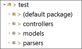
Within this package, create a new JUnit test class called JsonParserTest.
Delete the generated test() method.
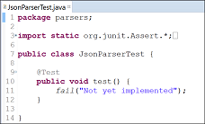
In the JsonParserTest class, enter the following code:
package parsers;
import static org.junit.Assert.*;
import static org.hamcrest.CoreMatchers.equalTo;
import static org.hamcrest.CoreMatchers.containsString;
import org.junit.Test;
import models.User;
import play.test.WithApplication;
public class JsonParserTest extends WithApplication{
@Test
public void userConvertsToJsonStringAndBackAgain() {
// Create a new user and save it in the database
new User("Jim", "Simpson", "jim@simpson.com", "secret").save();
// Retrieve the user we just added by their email address
User joesoap = User.findByEmail("jim@simpson.com");
//Test the parsing of the User into a String
String jsonReturned = JsonParser.renderUser(joesoap);
// Test the String returned from the parse contains the user data
assertNotNull(jsonReturned);
assertThat(jsonReturned, containsString("jim@simpson.com"));
assertThat(jsonReturned, containsString("Jim"));
assertThat(jsonReturned, containsString("Simpson"));
assertThat(jsonReturned, containsString("secret"));
// Test the String returned from the parse re-renders into user object format
assertThat(joesoap, equalTo(JsonParser.renderUser(jsonReturned)));
}
}Via your command prompt, when you run the tests, the above test should also be successful.
In the PacemakerAPITest class, enter the following tests (read them to ensure you understand the mechanics of the tests):
@Test
public void DELETEOnApiUsersRouteShouldExist() {
RequestBuilder request = new RequestBuilder()
.method(DELETE)
.uri("/api/users");
Result result = route(request);
assertThat(result.status(), equalTo(OK));
}
@Test
public void GETOnApiUsersRouteShouldExist() {
Result result = route(fakeRequest(GET,"/api/users"));
assertThat(result.status(), equalTo(OK));
}
@Test
public void GETOnDummyRouteShouldNotBeFound() {
Result result = route(fakeRequest(GET, "/api/blah"));
assertThat(result.status(), equalTo(NOT_FOUND));
}Via your command prompt, when you run the tests, the above test should also be successful.
In a previous lab, when you created your pacemakerplay project from a play-java seed, two sample test classes were created: ApplicationTest and IntegrationTest.
Open the ApplicationTest class (it should be in test/default package):
public class ApplicationTest {
@Test
//This is just a dummy test to ensure that all is ok with JUnit!
public void simpleCheck() {
int a = 1 + 1;
assertEquals(2, a);
}
@Test
public void renderTemplate() {
Content html = views.html.index.render("Welcome to Pacemaker Web 1.0");
assertEquals("text/html", html.contentType());
assertTrue(html.body().contains("Welcome to Pacemaker Web 1.0"));
}
}We are interested in the renderTemplate() method as it is unit testing our view template, index.
As a template is a standard Scala function, we can execute it from a test and check the result.
Review the renderTemplate code above.
If you were having a problem with the test classes in this lab, the solution can be found here: